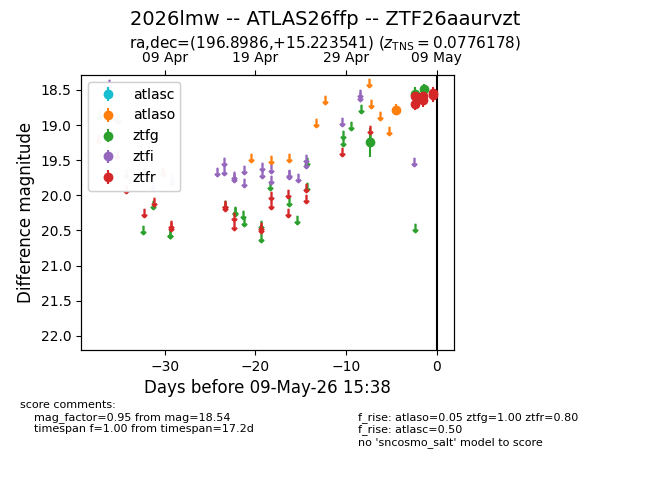
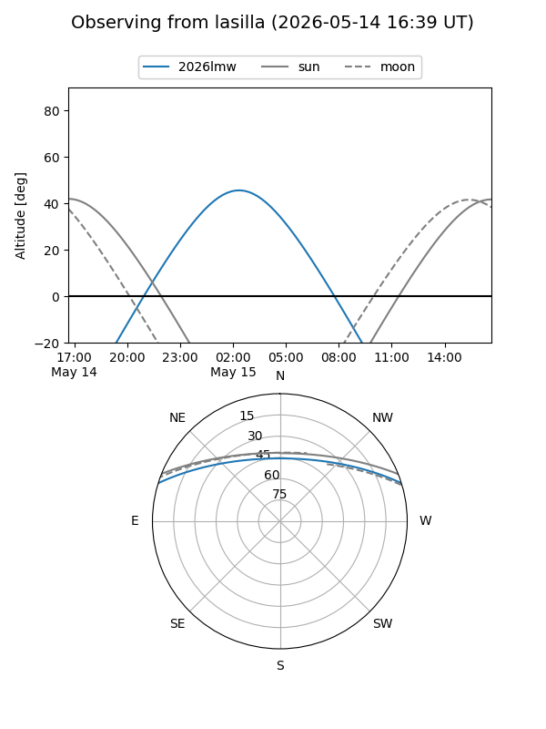
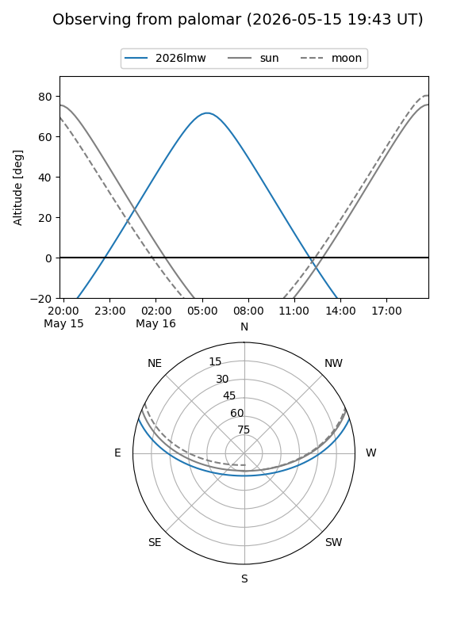
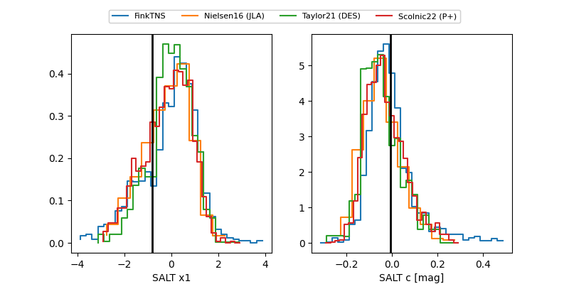

2026lmw
Target 2026lmw at 2026-05-09 15:39
Aliases and brokers:
FINK: link
Lasair: link
ALeRCE: link
TNS: link
YSE: link
alt names
ZTF26aaurvzt (ztf,fink_ztf)
2026lmw (tns,yse)
ATLAS26ffp (atlas)
Coordinates:
equatorial (ra, dec) = 196.8986,+15.22354
equatorial (HMS+DMS) = 13:07:35.67,+15:13:24.75
galactic (l, b) = (321.2585,+77.51669)
Flags:
confirmed ia
Photometry:
last atlasc=18.60, atlaso=18.78, ztfg=18.49, ztfr=18.54
1 atlasc, 2 atlaso, 3 ztfg, 6 ztfr detections
Lightcurve

Visibility


Additional plots
